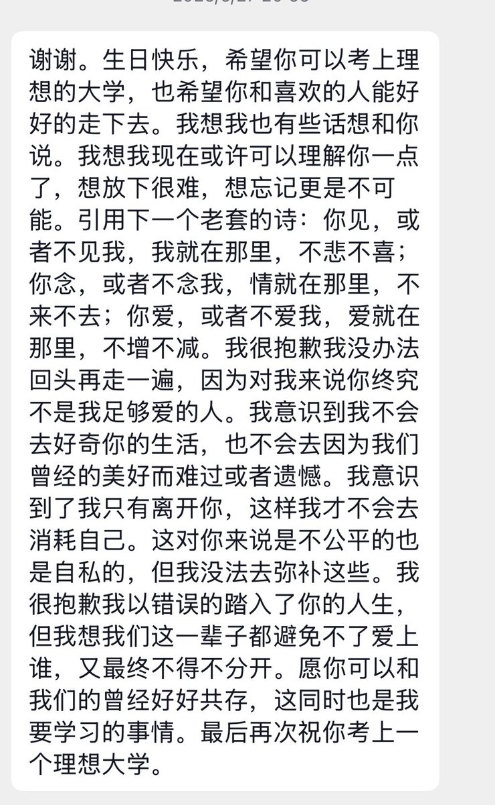

嗨呀翻到了分手三年后给前任发的消息，他回复我了。看到这个还是心脏一阵抽痛。其实我还爱他吗？我还对他有怀恋吗？好像都不是这样，我只是没有办法去接受那段晦暗的日子，自顾自的把他当成了我的救世主然后在心中装饰他的形象。其实我从一开始都做不到自洽，我想念他吗？
根本就不是这样的，我只是想念我能够在这个rpg游戏里遇到另一个真实玩家的欣喜，想念那种让我安心的感觉。
我不爱他，我现在已经明白了，我确实不爱他。但我需要他，在我闭紧双眼蒙住耳朵往前摸瞎走的时候，需要有一些温暖的东西包围我，可能我只是想念那份幸福…
这样的幸福？这是爱吗？爱到底是什么呢？性行为是爱吗？幸福是什么的？我可以幸福吗？我有幸福的资格吗？我有幸福的资本吗？我有幸福的能力吗？我能爱吗？我可以爱吗？我不明白啊，我说不出口，我也不知道到底要和谁说，我总是披着人类的皮囊一套生物的模样，然后把这样的思绪咽下去、吐出来、无数次无数次反刍之后只能消化。我说不出口，我不信任别人。
这样的感情只能化成人家夺眶而出的雷雨🎵
根本就不是这样的，我只是想念我能够在这个rpg游戏里遇到另一个真实玩家的欣喜，想念那种让我安心的感觉。
我不爱他，我现在已经明白了，我确实不爱他。但我需要他，在我闭紧双眼蒙住耳朵往前摸瞎走的时候，需要有一些温暖的东西包围我，可能我只是想念那份幸福…
这样的幸福？这是爱吗？爱到底是什么呢？性行为是爱吗？幸福是什么的？我可以幸福吗？我有幸福的资格吗？我有幸福的资本吗？我有幸福的能力吗？我能爱吗？我可以爱吗？我不明白啊，我说不出口，我也不知道到底要和谁说，我总是披着人类的皮囊一套生物的模样，然后把这样的思绪咽下去、吐出来、无数次无数次反刍之后只能消化。我说不出口，我不信任别人。
这样的感情只能化成人家夺眶而出的雷雨🎵
